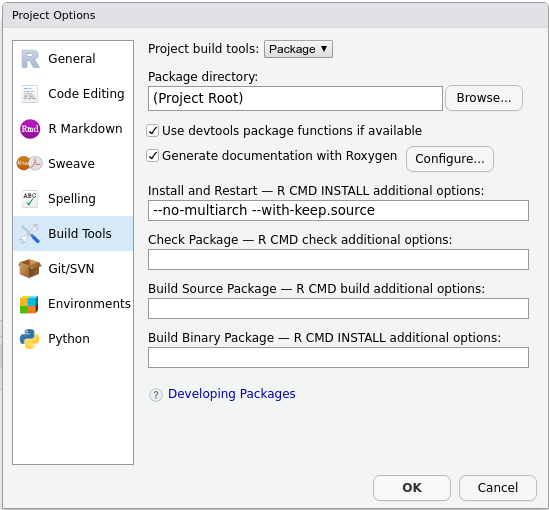
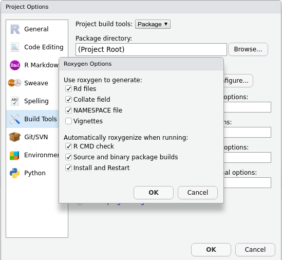

Content from Introduction
Last updated on 2024-01-23 | Edit this page
Estimated time: 30 minutes
Overview
Questions
- What is a package?
- Why do we want a package?
Objectives
- Understand what a package is.
- Understand why a package is useful.
- Understand the tools you are about to use.
Picture yourself starting a new programming project. Most likely, your first step will consist of creating a new folder, a folder that you will later populate with files. If the project is long and complex, you will need several files and also some subfolders. The folder structure can eventually become pretty complex and difficult to maintain, especially if your project has multiple authors. Fortunately, you can make this process a lot easier by structuring our work as a software package.
Prerequisites
Have you ever written an R function? If the answer is
yes, then you are ready to take this course. If the answer is no, we
recommend you go through this
episode of the Programming
with R course.
What is a package and what is it good for?
A package may sound complex, but it is simply a standard way of structuring your project. This standardized structure applies to the files and (sub)folders of your project, but also to your code: in an R package, the code consists of functions only. These will be the access points for anyone who wants to use your code.
Structuring your project as a package has several advantages, such as increased:
- Robustness
- Reproducibility
- Shareability
- Legibility
- Usability
- Maintainability
Structuring your R project as a package is a way of making them
easily available to other R users. You probably know this process
already: did you ever use a library (such as knitr,
lubridate or stringi)? If the answer is yes,
you are already using packages. Packages written by someone else.
In this lesson we will show you how to write your own, so you can actively participate in the R community.
How can this course help me?
As we will see during this course, applying a standardized structure comes with several unexpected benefits. Let me ask you a few questions:
- Did you ever have problems running a script written by a colleague?
- Did you ever have problems running your own code?
- Are you sometimes scared of editing your code, just in case you “break” it?
- Do you suspect that some parts of your code may not be working as you want them to?
- Do you feel that you are losing control about how your code is growing?
If your answer to any of the previous questions is yes, stay with us. You may not know it yet, but software packaging can make your life easier.
Can anyone give an example of these things happening to them in their work?
The tools we will use
Why R?
The practice of software packaging is applicable to many programming languages. The language of choice for this course is R. Is there any reason for that?
As we will see, R projects are particularly easy to be written in the form of packages. This makes R the ideal language for getting started with packaging.
Why RStudio?
RStudio is an Integrated Development Environment (IDE) specifically
designed for R. As many IDEs, it contains some menus and
buttons arranged in an intuitive interface. This will relieve a lot of
mental space, as we do not have to remember the commands for common
operations such as building, saving, knitting
and so on. In this course we will make extensive use of it.
Pro-tip
When you hover over a button in RStudio, a textbox will be displayed.
Among other things, this textbox will contain the equivalent key
combination (for instance, Ctrl/Cmd + S for saving). Paying
attention to these text boxes is a perfect way of getting used to, and
ultimately remembering, those key combinations.
Additionally, after pressing a button, some commands will be executed in the console. It is always very instructive to take a look at the console to see what commands the button triggered.
Content from Accessing packages
Last updated on 2024-01-23 | Edit this page
Estimated time: 45 minutes
Overview
Questions
- How do I use someone else’s package?
- How do I use my own package?
- What is the difference between installing and attaching?
Objectives
- Install packages from CRAN
- Install packages from other locations, such as GitHub
- Build, install and attach your own packages
To most learners of this lesson, installation instructions are common knowledge. This part of the lesson may therefore be experienced as somewhat slow, and we encourage you to be sensitive to this. We have chosen to be comprehensive in this episode, and include installation instructions from CRAN alongside those from other platforms. This provides context to some new functionality; functionality that is quite essential when distributing a first package (which is easiest done through e.g. GitHub).
Installing packages
To use any R package, it must first be installed. This means that the package is saved to our system in a standard location, and a usable way. This allows us to use the functions contained in the package.
There are many ways of installing packages to our system. In this section, we will look at the most common ones.
Install a package from CRAN
CRAN is the official repository for R Packages. It stands for the Comprehensive R Archive Network. It is an awesome collection of high quality resources written by other R users just like you.
Installing a package from CRAN is particularly easy. For example, we
would like to install the package devtools. The package can
be installed by opening RStudio and browsing to the Packages
tab:

This tab has a button, Install. After pressing this button, a window will appear:

We write devtools in the field labeled
Packages, and make sure to check the box labeled Install
dependencies. When we press Install, Rstudio will download
and install the package, as well as the required dependencies. Depending
on the package, this may take a while, ranging from a few seconds to a
few minutes.
The same, but with a command
We can achieve the same result by typing code into the console:
R
install.packages("devtools")
If you used the graphical interface, you may have noticed that Rstudio put this same command into the console. This happens often with RStudio, and is a useful feature: while you use the graphical interface, RStudio will build and execute the corresponding command for you.
You can confirm that the installation was successful by checking the Packages tab. The newly installed package should appear there.
Install a package from GitHub
Although CRAN is the official repository for R packages, it is not the only one you can use. A very interesting alternative is GitHub, a popular open code repository. We can use GitHub to find packages or to make our own packages publicly available. Contrary to CRAN, packages in GitHub are not reviewed. This has an advantage: you can have your package published there immediately.
To install a package from GitHub, we need the package
devtools, which we have just installed.
devtools contains functionality to install packages from
many different sources.
To install a package from GitHub, we will use the following function:
R
devtools::install_github("PabRod/kinematics")
This installs the package kinematics from the github
page github.com/PabRod/kinematics.
Removing packages
Of course, you can also undo the installation of a package. Using the
Packages tab in Rstudio, you can click on the x
icon next to a package to delete it from your system. In the console,
the function remove.packages() does the same. For example,
to remove kinematics:
R
remove.packages("kinematics")
There are several other functions available in the
devtools package to install a package from other locations
than GitHub. They all start with devtools::install_.
Install a package from a repository
Find an R package on a public repository, such as GitHub or GitLab, and install it with devtools.
If you have trouble finding a package, you can try:
- From GitHub: github.com/Lchiffon/wordcloud2
- From GitLab: gitlab.com/r-packages/psyverse
For an extra challenge: try to install them using different functions.
Hint: the function devtools::install_git() applies to
any git repository.
R
devtools::install_github("Lchiffon/wordcloud2")
devtools::install_gitlab("r-packages/psyverse")
or
R
devtools::install_git("https://github.com/Lchiffon/wordcloud2")
devtools::install_git("https://gitlab.com/r-packages/psyverse")
There are two common situations where you would want to use GitHub instead of CRAN:
The first and most obvious one is when the package you want does not exist on CRAN. This can happen for many reasons. Maybe the package is still work in progress, or does not pass the CRAN quality checklist. Or perhaps the authors just do not want to publish it on CRAN.
The second situation is when you need a cutting edge version of the package. R developers usually use GitHub for their everyday work, and only submit a new version to CRAN when they have accumulated enough changes. If you need a very particular version of the package, usually GitHub is the place to go.
Install a package from source
Finally, what if the package is only available on your computer?
Here, too, devtools can be used. You can use
devtools::install_local() to install a package from a zip
file or a local directory.
However, most likely you will need to install a local package because it is the one you are building yourself. This will be the case with the one we are building during this lesson.
The local installation will be very easy to do once everyone has their first package set up. It is advised to wait with showing this workflow until this stage in the lesson: the chapter Getting Started.
In this case, you can use the Build tab of your R project:

By pressing Install and restart three things will happen:
- The package will be, indeed, installed.
- The R session will be restarted.
- The package will be attached.
A short glossary
It is useful to keep in mind these three concepts:
- Build: converts a local package into an installable package.
- Install: adds the package to your local library, so it is ready to be attached when desired.
- Attach: loads the package’s functions to your workspace, making them ready to be used.
When you press Install and restart, the three events happen in sequence.
Using packages
Attaching a package
If you have used packages before, you may know that in order to start
using an installed package, you can load it into workspace. In
R jargon this is known as attaching the package.
This means that its functions and data will become available in your
working session, so you can use them directly in your console and your
scripts.
We can attach an installed package with the function
library(<package name>). For example, after
installing devtools, we can attach it to our workspace as
follows:
R
library(devtools)
From this moment on, all the functions in devtools are
directly available, and we can refer to them by name. For example, the
function install_github() inside the package, can be called
directly with its name:
R
install_github()
Using a function without attaching the package
Another way to use functions from installed packages, is with the
syntax: <package>::<function>.
For instance, if we want to use the function
install_github from the package devtools we
can call it directly as:
R
devtools::install_github()
This way, you make sure that there is no confusion between functions with the same name from different packages.
To attach or not to attach?
If you are developing a package that depends on other packages, you
will probably need to call functions from other packages. These
functions will be used in the functions of your own package. When you do
this, you should call functions from the other packages using the syntax
<package>::<function>, and not by
using library(<package>) inside a package.
Do you have any idea why?
We want our package to do its work and leave no trace behind. Using
library(<package>) somewhere inside the package will
attach the package without the user realizing. Suddenly, additional
functions are available to their workspace, and this may have unintended
consequences.
Additionally, a common problem is that two packages may contain two functions with the same name. Explicitly naming the package when calling the function prevents this confusion, and it ensures that the right function is used.
Distributing your package on GitHub
After you have set up your package, you can share it online in a public repository such as GitHub. GitHub and Rstudio work well together with the version control system Git. While this is out of the scope of the present course, if you are interested, we encourage you to take the course on Version control with Git and GitHub (note this supplemental on Git with Rstudio), and this lesson chapter on Collaborating via Github).
Can I publish my package on CRAN?
Most developers of CRAN packages are R users just like you and me. If you have a package you are proud of, and you think it may be useful for someone else, consider submitting it.
Key Points
- To use a package you have to install it
- There are several ways of installing a package
- To use a homemade package, you also have to build it
- The build, install and attach process is usually automated by RStudio
- Functions used inside your package are best referred to with their
full name:
<package>::<function>()
Content from Getting started
Last updated on 2024-01-23 | Edit this page
Estimated time: 25 minutes
Overview
Questions
- “I want to write a package. Where should I start?”
Objectives
- “Create a minimal package”
What does a package look like?
The minimal folder structure of a package looks like this
.
├── R
│ └── <R functions>
├── README.md
├── LICENSE
├── DESCRIPTION
└── NAMESPACEwhere:
- The folder
Rcontains all theRcode (more on this in Writing our own functions). - The
README.mdfile contains human-readable information about the package (more on this in the Documentation episode). - The
LICENSEcontains information about who and how can use this package (more below). - The
DESCRIPTIONfile contains information about the package itself (more information in the episode on Dependencies). - The
NAMESPACEfile is automatically generated and tells R which functions can be accessed (more in the Documentation episode).
A minimal package
The menus in RStudio will help us in creating the most
minimal of packages. Let’s open RStudio and look at the
upper left corner. We will press
File > New project > New directory, and see a menu
like this:
As you can guess, we will now press R package. The new
menu asks us to fill in some information. For the moment, bear with me
and fill in the following:

Notice that:
- We gave the package a name:
mysterycoffee. - I created my package on my
~/Desktopfolder, but you can use another location if you prefer. - We left
Create git repositoryunticked. If you want to know more aboutgit, please refer to our courses on Version control. Integrating packages with Git is very useful, but we will not talk about it in this lesson. - We left
Use renv with this project unticked. - We ticked
Open in new session.
Now we are ready to press Create Project.
What just happened?
After pressing Create Project, a new
RStudio window should have appeared. The working folder
should be mysterycoffee, and it should already have some
contents:

Also, the file ./R/hello.R would appear open in the
editor. This is an example file that contains a toy function. Its only
functionality is to, well, to say “hello”. This may sound
silly, but it will help you writing your first packaged R functions.
Thehello.Rfile
Let’s take a look at the hello.R file. You’ll see that
it contains a tiny function and some comments. The comments are actually
more important than the function itself. They contain very useful tips
about how to install, check and test the package.
As a rule of thumb: always read the contents of the example files RStudio creates for you.
Play with the package
Believe it or not, this package is ready to be installed. Just go to
the upper right corner and press
Build > Install and Restart (or, in newer versions of
RStudio, press
Build > Install > Clean and install).
This will install and attach the package. The package contains only
one function so far: hello().
R
mysterycoffee::hello()
OUTPUT
[1] Hello, world!We can add an argument like this:
R
hello <- function(name) {
print(paste0("Hello, ", name, "!"))
}
To use the updated function available in RStudio, we can use either
R
devtools::load_all() # then call with hello("Luke")
devtools::install() # then call with mysterycoffee::hello("Luke")
Alternatively, we can also use the graphical user interface as above:
Build Install and Restart.
Note: load_all() simulates installing and
attaching the package. In larger projects, it allows us to iterate more
quickly between changing functions and testing them in the console.
Tell me how you load your functions
There are many ways of using functions, but all of them involve loading them into the workspace. We just learned how to do that using a package.
How do you usually work with functions? Perhaps you source them from an external file? Do you usually work on a single, long script?
Can you think of any advantage of using packages instead? Don’t worry if the answer is no. This is actually a difficult question at this stage. We’ll show the full power of packages along the course.
More advanced folder structures
In this course we will show you how to unleash the full power of packaging. In order to do so, we will use some optional folders. You can see an overview below
.
├── R
│ └── <R functions>
├── data (optional)
│ └── <data>
├── tests (optional)
│ ├── testthat.R
│ └── testthat
│ └── <tests>
├── vignettes (optional)
│ └── <Rmd vignettes>
├── inst (optional)
│ └── <any other files>
├── README.md
├── LICENSE
├── DESCRIPTION
└── NAMESPACEwhere:
- The
datafolder contains, as the name suggests, data (more in the Data episode). - The
testsfolder contains unit tests, that will be very useful for making our package robust and mantainable (more in the episode on Testing). - The
vignettesfolder contains documentation inRmdformat. As we’ll see, this is a very suitable format for your reports and publications (more in the Vignette episode). - The
instfolder contains any extra file you may want to include (more in the Data episode).
Content from Writing our own functions
Last updated on 2024-01-23 | Edit this page
Estimated time: 30 minutes
Overview
Questions
- “How can I add functionality to my package?”
Objectives
- “Create a custom package”
So far, we have been playing with the example package that is
built-in in RStudio. It only contains a function that says
Hello, world!. It is extremely useful that we have an
example that gets us started, but this package is not very interesting
yet. In this and the next episodes, we will create our own customized
package, which in the previous episode we gave the name of
mysterycoffee.
mysterycoffee, our virtual coffee room
Our package will try to mitigate a practical problem: social isolation in remote working environments. We want to create a software solution that simulates random encounters at the office’s coffee machine… when there is no office. The very first step is to answer three very important questions:
1. What will our package do?
As we said, our package will simulate random encounters between employees.
2. How will we do it?
After some thinking, we figured out that we can have a function that has the following input and output:
- Input: vector of employees’ names.
- Output: a two-column matrix, randomly grouping the employees’ names into couples.
The output table can be published, say, weekly, and each couple invited to have a videoconference-coffee chat, just as if they had randomly met at the coffee machine.
So this will be our starting point. In the next sections we’ll write an R function that does exactly this.
Later on, we’ll see that our original design may face unexpected challenges. For instance, what happens if the number of employees not even?
3. Are we reinventing the wheel?
This is also an important question worth investing some time in when creating new functions or packages. Can we solve our problem with a software solution that someone else already wrote?
Well… if our problem really was to simulate random encounters, the answer is yes. There are already solutions for this. But our real problem is learning how to make R Packages, isn’t it? So we’ll use this problem as a pedagogical example.
Getting our hands dirty
First step: remove hello.R
The next step is to remove the file hello.R. This was
just an example file, and we don’t need it anymore.
Second step: edit DESCRIPTION
Now that we know what our package is expected to do, it is a perfect
moment to edit the DESCRIPTION file.
After editing, your DESCRIPTION file should look similar
to:
TXT
Package: mysterycoffee
Type: Package
Title: Simulation of random encounters between couples of persons
Version: 0.1.0
Author: Pablo Rodriguez-Sanchez
Maintainer: Pablo Rodriguez-Sanchez <p.rodriguez-sanchez@esciencecenter.nl
Description: Simulates random encounters between couples of persons
This package was inspired by the need to mitigate social isolation in remote
working environments. The idea is to simulate random encounters at the office's
coffee machine... when there is no such an office.
License: What license is it under?
Encoding: UTF-8
LazyData: true
RoxygenNote: 7.1.1More onDESCRIPTION
In the previous exercise we deliberately ignored some of the fields
in the DESCRIPTION file. Two of them are particularly
relevant, the Version and the License
fields.
The Version field helps you and your users keep track of
the package version. It is advisable to use semantic versioning. In a
nutshell, semantic versioning means using a
MAJOR.MINOR.PATCH structure for naming your versions. If
your new version only fixes some bugs, increase the PATCH
by one. If your new version includes new features, increase the
MINOR by one. If your new version includes new features
that are not backwards compatible, increase MAJOR by
one.
Regarding the License: software licensing is a large and
complicated field which lies at the intersection of programming and law.
Its intricacies are far beyond the aim of this course. The good news is
that, most likely, most of your research code can be released under a
permissive license, typically MIT or Apache.
If you want to know more, please take a look at these materials.
For more, detailed information about DESCRIPTION files,
see R Packages
documentation.
Third step: create a function
We came up with the following prototype function that will do the random grouping:
R
make_groups <- function(names) {
# Shuffle the names
names_shuffled <- sample(names)
# Arrange it as a two-columns matrix
names_coupled <- matrix(names_shuffled, ncol = 2)
return(names_coupled)
}
Please, open an editor, copy the function above and save it as
R/functions.R. All the functions of the package have to be
in R files inside the R/ folder.
On the art of being tidy
So far, our package only has one function, and we have chosen a very
boring name for the file where it is stored
(R/functions.R).
In the future, keep in mind that you can use any valid filename for storing your functions. Additionally, such a file can contain one or many functions, and you can use multiple files if you want. Indeed, using multiple files with descriptive filenames is a good idea.
For instance, if your package has some functions for doing input,
output and parsing of data, it could be a good idea to store those as
R/io.R. You can later put your analysis functions in
R/analysis.R, and the plotting ones under
R/plotting.R.
Be creative and informative! The only rule is that your
.R files should “live” inside the R/
folder.
Content from Licenses
Last updated on 2024-01-23 | Edit this page
Estimated time: 25 minutes
Overview
Questions
- How do I allow the use of my package?
Objectives
- Understand the reason for licenses
- Learn how to add a license to a new R package
What is a license?
In a license, you specify how your code may be used. Everything you create has copyright, which limits the possibility for others to (re)use it. A copyright holder therefore has to explicitly give permission (and specify limitations) for the use of their work. You do this by attaching a license.
Who has copyright?
If you code in your own time for a project only you contribute to, then you are the copyright holder. When a project is authored by multiple people, all of these people have copyright, and therefore need to agree on the license.
When a project is done under employment, the copyright situation becomes more difficult. In most cases, copyright officially belongs to the employer, although the exact situation can differ depending on the employment contract. It is good practice therefore to check whether your employer has a policy for software licensing.
In practice, it is often the case that (University) employees assume copyright of their own work, and in the absence of (open source) policy, decide on their own licenses. Being thorough and checking with the University’s legal department may result in an overly cautious response that requires the use of a proprietary license, heavily limiting the options for your package’s (re)use.
What types of licenses exist?
Many (many!) different options exist for licensing your software. In the spirit of R (licensed under GPL) and the Carpentries (licensed under CC-BY), we will focus on open source licenses. These are licenses that allow the use of the source code. You will meet these licenses in community-built software projects, like R itself.
Two important flavours of open source software licenses are: permissive and copyleft (also known as viral).
Copyleft licenses require that any product that uses the licensed work must be licensed in the same way. That is why it is called a viral license: it spreads. A well-known copyleft software license is the GPL, the GNU Public License. R itself, as mentioned, is licensed under GPL.
Permissive licenses are similarly open, but they do not restrict the way in which downstream work is licensed. A few well known permissive licenses are the MIT license, the Apache license, and the BSD license. They differ in small respects, but their philosophy is the same.
How do I decide what license to use?
First, ask yourself a few important questions:
- Is there code you use in your project which is already licensed?
- If so, what are their requirements?
- Is there an official policy from my employer that informs my license choice?
Then, head to choosealicense.com, and choose a license. Make sure that all copyright holders for your package agree with your choice.
Copyleft and dependencies in R
R is licensed with the copyleft license GPL. Does this mean that every package in R requires a GPL license? Fortunately, the answer is no. The GPL license is not that strict.
Because of the way the R language works, you are not required to license your R package with GPL. This is also the case when other libraries that your package imports (your so-called dependencies) are GPL licensed: you are not shipping that code directly with your package, so, you are not required to adhere to the copyleft policy.
However, if you copy code from another project and paste it to yours, then that project’s license does become relevant. Be sure to consult it when choosing a license for your own work.
How do I add a license to my R package?
It is easy to apply your license using the usethis
package.
R
usethis::use_apache_license()
Two files are edited with this command: - DESCRIPTION -
license.MD
Adding and changing the license of the package
- Using the
usethispackage, apply an Apache license to your package. For help, see this link. - In the root directory of your project, which files have changed? How have they changed?
- Change the license of your package to the license you want to use. Which function did you use?
-
We can use
R
usethis::use_apache_license() The function
usethis::use_apache_license()edits two files. The full text inLICENSE.mdchanged. And the used license reported inDESCRIPTION.mdchanged.
Content from Testing
Last updated on 2024-01-23 | Edit this page
Estimated time: 90 minutes
Overview
Questions
- How can I know that my package works as expected?
Objectives
- Understand why tests are useful
- Learn how to create a battery of basic tests
- Learn how to run the tests
- Learn to not panic if a test fails
- Optional: Learn how to perform a code check
What is the first thing you do after writing a function or another piece of code? Most likely, you try it, and figure out if it works as expected. Right? If the answer is yes, congratulations! You already know the very basics of testing!
The main lesson we’ll get out of this episode is that those tiny tests are extremely valuable. So much, that they deserve more than just being typed on the console and be forgotten forever. Tests deserve to be saved, and even more, rerun often. As we will see now, tests can actually be a built-in part of your package!
Manual tests
Now, let’s take a look at the function we have written. How can we check that it works as expected? One possibility could be trying the function in the console. For instance:
R
library(mysterycoffee)
names <- c("Luke", "Vader", "Leia", "Chewbacca", "Solo", "R2D2")
grouped_names <- make_groups(names)
print(grouped_names)
The output should look similar to this:
OUTPUT
[,1] [,2]
[1,] "Luke" "Chewbacca"
[2,] "Vader" "Solo"
[3,] "Leia" "R2D2"From what has been printed to the console, we can tell that everything went fine. And not just that: We are receiving a lot of information just by looking at how the function did its job. For instance, we notice that:
- All names appear once and only once.
- The names have been randomly reordered.
- The function created three pairs of names.
- The output is a matrix of strings.
All of this is excellent, but these tests pose a practical problem: if we test by looking at the output of the function, someone has to be there to check it went fine. Is there a way of avoiding this? The answer is yes. We can use automated tests to do this for us.
Automated tests
Automated tests are tiny scripts that do exactly what we just did:
check that everything is fine. In R packages, R tests are expected to
live inside the tests/testthat/ folder. The easiest way to
start writing tests is by asking the usethis package to
create the folder structure for us:
R
usethis::use_testthat()
The command above took care of all the folder structure regarding tests. It also printed some useful information on the console:
✓ Setting active project to '~/mysterycoffee'
✓ Adding 'testthat' to Suggests field in DESCRIPTION
✓ Setting Config/testthat/edition field in DESCRIPTION to '3'
✓ Creating 'tests/testthat/'
✓ Writing 'tests/testthat.R'
• Call `use_test()` to initialize a basic test file and open it for editing.It also created a file called tests/testthat.R. This a
system file that rarely has to be manually edited.
When we are developing a package, we’d like to keep our working space
as clean and isolated as possible. The first, recommended snippet, is
bringing exactly one function from the usethis package to
our environment. The second one, on the contrary, is bringing
each and every function contained in
usethis to our environment.
Use smart names
usethis::use_test(<name>) will generate the test
file tests/testthat/test-<name>.R. Our functions live
in a file called functions.R, so choosing
functions as the name for the tests file is a good
idea.
Callout
Don’t forget that projects may grow, and in the future perhaps you’ll have several files containing different functions (for instance, one containing the input/output functions, another containing functions used for analysis and a last one containing the plotting ones). In such a situation, it will be advisable to have three test files, each of them with the corresponding name.
Automated tests are very similar to testing directly in the console,
but differ in a crucial aspect: they need to contain
assertions. An assertion is a line of code that, typically,
warns us if a function behaves in an unexpected manner. You could say
that the assertions take the place of the observer, and check that the
function is behaving in the expected way. Most assertions are contained
in the testthat package, and have names starting by
expect_, such as expect_equal,
expect_true, and so on.
Write your own test
Let’s follow the advice printed in the console and modify the file
tests/testthat/test-functions.R. In order to do this, we
first have to open it and take a look at its contents. It should contain
something like this:
R
test_that("multiplication works", {
expect_equal(2 * 2, 4)
})
This is just an example test, that was created to make your life easier. You can use it as a template for writing your own tests. Take 10 minutes to: 1. Figure out what is happening inside this test. Can you understand it? 2. Write another test, just below this one, that checks that addition also works. Tip: you can copy-paste and edit the current test.
The first argument to test_that is simply the name of
your test, that you choose. Beyond that, the test is checking that 2
times 2 equals 4. This may sound silly, but actually something quite
interesting is happening. The test checks that the *
operator in R works and your human interpretation of
multiplication are aligned.
Regarding the test for addition, a possible solution would be:
R
test_that("multiplication works", {
expect_equal(2 * 2, 4)
})
test_that("addition works", {
expect_equal(2 + 3, 5)
})
Expectations vs results
Notice that the assertions, also known in R as expect functions often look like:
R
expect_equal(<actual result>, <expected result>)Where the actual result is obtained using software, and the expected result is provided via expert knowledge.
Other common expect functions are:
R
expect_true(<statement we expect to be true>)
expect_false(<statement we expect to be false>)
expect_error(<code we expect to fail>)Please refer to testthat
documentation for a thorough list of expect functions.
A real test
So, we just used tests to convince ourselves that R can
multiply and add numbers. But this was not our original goal. What we
would like to do is to write an automated test that checks that our
function make_groups works as expected. In order to do
this, it will be useful to create a new testing file:
R
usethis::use_test('make_groups')
This will create a test file in
tests/testthat/test-make_groups.R. It will contain an
example test that we can delete.
What can we test now? For instance, the test below will check that the number of elements in the output equals 6:
R
test_that("number of elements", {
names <- c("Luke", "Vader", "Leia", "Chewbacca", "Solo", "R2D2")
grouped_names <- make_groups(names)
expect_equal(length(grouped_names), 6)
})
There are two main differences.
One is small: we don’t have to attach the library. The file
tests/testthat.R takes care of this automatically for
us.
The other is more important: we are not checking by looking at the
result. Instead, we have to write down an assertion. In our case, we
instruct R to expect that the number of elements of our
ouput should be 6. (Remember the structure
expect_equal(<actual result>, <expected result>))
The new test should look similar to:
R
test_that("shape", {
names <- c("Luke", "Vader", "Leia", "Chewbacca", "Solo", "R2D2")
grouped_names <- make_groups(names)
expect_equal(nrow(grouped_names), 3)
expect_equal(ncol(grouped_names), 2)
})
Running the tests
The tests can be run from the build tab, usually located in the upper
right corner. Just press More Test package. The menu will
also show you the hotkey, typically
Ctrl / Cmd + Alt + T.
After the tests are performed, a handy summary table will be displayed:
OUTPUT
==devtools::test()
ℹ Loading mysterycoffee
ℹ Testing mysterycoffee
✓ | OK F W S | Context
✓ | 2 | functions
✓ | 3 | make_groups
══ Results ══════════════════════════════════════════════════
[ FAIL 0 | WARN 0 | SKIP 0 | PASS 5 ]
Nice code.The table above tells us that all the three tests passed successfully.
Test coverage
Test coverage is an indirect method to assess the quality of your
package: As a rule of thumb, the higher the test coverage, the more you
can be confident that your package is working as expected. It works by
measuring the amount of lines of code in your package that have been
tested by your test set. For example, let’s say that we have written 100
lines of code. The number of lines executed via our tests is 30, then my
test coverage is 30%:
R
(30 / 100) * 100
You can measure automatically your test coverage by using the
covr package via its report() function.
R
library(covr)
report()
report() provides a nice table summarising the coverage
of the functions in your package.
Why measuring tests’ coverage?
Having an idea of how many lines of code you have effectively tested can help you identify what conditions, decision points (i.e., if/else scenario) and thus portions of the code you may have left out from your tests, perhaps because you haven’t thought about it.
For more information about how covr works:
R
vignette("how_it_works", package = "covr")
What to do if a test fails?
When writing tests, you are allowed to think a bit evil. Actually, you are encouraged to. It is a good idea to think of the many ways the package may fail, and try them.
I think I figured out one: what if we want to use
make_groups with an uneven number of names? Let’s write a
test for testing that.
Uneven mysterycoffee
Write new a test that passes an uneven number of names to
make_groups.
You can use our previous test, the one we called “number of elements”, as a template, and adapt it to accept a list with one more name. This should be a new, additional test, so please copypaste it, don’t delete it.
Run the tests again. What happened?
We can add a seventh, annoying and troublemaking character, to our list. The test will look as below. Note that we gave this test a descriptive name of what we are testing: “uneven number of elements”.
R
test_that("uneven number of elements", {
names <- c("Luke", "Vader", "Leia", "Chewbacca", "Solo", "R2D2", "Jar Jar Binks")
grouped_names <- make_groups(names)
expect_equal(length(grouped_names), 7)
})
After we run the test, we get an ugly message:
OUTPUT
ℹ Loading mysterycoffee
ℹ Testing mysterycoffee
✓ | OK F W S | Context
✓ | 2 | functions
✓ | 3 1 | make_groups
───────────────────────────────────────────
Warning (test-make_groups.R:18:3): uneven number of elements
data length [7] is not a sub-multiple or multiple of the number of rows [4]
Backtrace:
1. mysterycoffee::make_groups(names) test-make_groups.R:18:2
2. base::matrix(names_shuffled, ncol = 2) ./R/mysterycoffee/R/functions.R:16:2
───────────────────────────────────────────
>
══ Results ════════════════════════════════
[ FAIL 0 | WARN 1 | SKIP 0 | PASS 5 ]Don’t let the ugliness of the panel intimidate you. As usual, we have a lot of high-quality information here.
To begin with, we got a warning and not an error. This means that the code ran, but it may not behave as expected.
Additionally, we get a human-readable description of what went wrong: the length of the data is 7, and that’s not a sub-multiple of the number of rows, which is 4.
It even gives us a backtrace, that points to the exact files and lines in those files where something went wrong.
What shall we do now?
So, thanks to our test, we discovered a possible problem in our function. What shall we do now?
There are several possibilities. We can leave the function just as it is, and modify the test to assert that a warning is thrown. We can forbid the user to introduce any number that is not even, and throw an error otherwise. Maybe we can come up with an improved function that fixes this.
All of them are reasonable possibilities. Just keep one thing in mind: whatever change we make, it ideally shouldn’t affect the tests that we already wrote!
What would be your preferred solution?
What are tests good for?
In this episode we learned how to create, store and run automated tests. But an even more important question is: why do we want tests for? Let’s reflect for five minutes about this relevant topic.
There are several reasons why storing your tests is a good idea. Some of them are:
- Code is alive. What works today may fail tomorrow. Keeping the tests will help us identifying future failures.
- Tests can be used as supporting documentation. As we’ll see soon, tests are often use examples. This can be very valuable for users.
- Your tests can be run by a colleague. For instance, in a different computer. If some installation or dependency problem appears, the tests will help discovering it.
Some caveats
Testing plotting functions
Very often, research packages contain plotting functions. The way to manually check that these functions work correctly is, usually, to create the plots and look at them. But this cannot be considered automated testing!
There are, nevertheles, a few things that you can test on a plotting function. For instance, you can check that it doesn’t crash. Or that it produces a plot object… even if nobody checks if it looks nice.
Checking (optional)
Also in the build tab there is a button with the text
Check on it.

This button can be understood as an extended version of testing. When pressed, several things will happen:
- It will attach the package.
- It will check that all dependencies are installed.
- It will check that the documentation can be generated.
- It will perform the tests.
- And most importantly, it will show an error with a descriptive message if something failed.
Checking is usually significantly slower than testing. For small changes in the code, it is usually a good idea to test. For larger changes, or an accumulation of several small ones, it is a good idea to check.
Rule of thumb: test often, check every now and then.
Content from Managing dependencies
Last updated on 2024-01-23 | Edit this page
Estimated time: 20 minutes
Overview
Questions
- How can I make my package as easy to install as possible?
Objectives
- Use the
DESCRIPTIONfile for declaring dependencies
What are dependencies?
Very often, our own code uses functions from a different package. For
instance, we used some functions from the package testthat
in our episode about testing. When that’s the
case, we need the potential users of our package to, at least, have
those other packages also installed in their machines. The, so to say,
sub-packages, are the dependencies of our package.
Providing a list of dependencies will greatly simplify the task of
installing our package. And the DESCRIPTION file provides a
simple and handy way of creating this list.
Using the DESCRIPTION file
At this moment, our DESCRIPTION file should look
approximately like this:
TXT
Package: mysterycoffee
Type: Package
Title: Simulation of random encounters between couples of persons
Version: 0.1.0
Author: Pablo Rodriguez-Sanchez
Maintainer: Pablo Rodriguez-Sanchez <p.rodriguez-sanchez@esciencecenter.nl>
Description: Simulates random encounters between couples of persons
This package was inspired by the need to mitigate social isolation in remote
working environments. The idea is to simulate random encounters at the office's
coffee machine... when there is no such an office.
License: What license is it under?
Encoding: UTF-8
LazyData: true
RoxygenNote: 7.1.1
Suggests:
testthat (>= 3.0.0)The most important keywords to declare dependencies are:
-
Suggests: for recommended dependencies, such as the ones required for testing, creating vignettes (see this episode) or plotting. -
Imports: for mandatory dependencies, that is, required for the basic functionality of the package.
As we can see in our DESCRIPTION file, the last two
lines already contain a dependency statement. Under the category
Suggests we can see the package testthat. More
specifically, we can see that a version equal or higher than
3.0.0 is suggested.
What do you mean mandatory?
Please note that, even if we tag a dependency as
mandatory using the Imports key, it will
never be automatically installed by our new package. We have to do
install it ourselves. What is then the use of tagging it as
mandatory? That now our package is aware that the
dependency should be installed, and it is going to
throw an error if that’s not the case.
Tip: take a look at the help menu of
usethis::use_package().
We can add the new dependencies by:
usethis::use_package("knitr", type = "Imports")
usethis::use_package("tidyr", type = "Suggests")Please notice how the DESCRIPTION file changed:
TXT
Suggests:
tidyr,
testthat (>= 3.0.0)
Imports:
knitrIf you prefer, you can also add the dependencies by directly editing
the DESCRIPTION file. But using
usethis::use_package() is handy!
Running devtools::check()
devtools::check() checks for many different things, but
here we want to see it in action for dependencies.
Let’s start by adding a function that depends on another package. We
use usethis::use_r() to initiate a file for this
function:
R
usethis::use_r("make_groups_and_time")
Then add the following function to the file
make_groups_and_time.R:
R
#' Make groups of 2 persons and coffee time
#'
#' Randomly arranges a vector of names into a data frame with
#' 3 columns and whatever number of rows is required. The first
#' two columns are the two persons that meet for the coffee;
#' the last column is the randomly sampled time at which they meet.
#'
#' @param names The vector of names
#'
#' @return A data frame with re-arranged names in groups and assigned coffee time.
#' @export
#'
make_groups_and_time <- function(names) {
groups <- data.frame(make_groups(names))
names(groups) <- c("person1", "person2")
possible_times <- c("09:30", "10:00", "15:15", "15:45")
groups_and_time <- dplyr::mutate(
groups,
coffee_time = sample(possible_times,
size = nrow(groups),
replace = TRUE)
)
return(groups_and_time)
}
From running devtools::check() we get:
OUTPUT
W checking dependencies in R code ...
'::' or ':::' import not declared from: ‘dplyr’We can add the dplyr dependency with
usethis::use_package("dplyr", type = "imports"). This
updates the DESCRIPTION.
Content from Documenting your package
Last updated on 2024-01-23 | Edit this page
Estimated time: 60 minutes
Overview
Questions
- How can I make my package understandable and reusable?
Objectives
- Write a readme
- Use roxygen2 for creating documentation
- Use roxygen2 for managing the NAMESPACE file
Why documenting?
Your code is going to be read by people, for instance:
- People interested in your research.
- Potential users of your code.
- Colleagues and collaborators.
- Yourself, in the future, after you forgot all the tiny details.
For this and other reasons, it is a very good idea to invest some time in writing good documentation.
The README
The first, and perhaps most important document of any coding project
is the readme file. This file typically has the name
README.md and is located at the root folder, just at the
same level as DESCRIPTION or NAMESPACE.
The readme file provides the very first contact with your code to potential users.
What do you want to tell your potential users?
Try to put yourself in the shoes of your potential users. They can be collaborators, people who found you code on the internet, …
What do you think they would like to know?
Now, take a look at the README from github.com/PabRod/kinematics.
What subjects are addressed in this README? As a potential user, is there anything that you miss?
With the results of this discussion, write a short README file for our package.
Get started with usethis::use_readme_md() to generate a
default README.md file.
(Optional) Readme rendering
One of the advantages of having a README.md is that most
code repositories render this file as a nicely-formatted reader-friendly
text. See, for instance, the “main page” of the kinematics
package on GitHub (link). In GitHub, you
can even create a readme about
yourself!
If you want to know more about GitHub, please take a look at the Software Carpentries’ lesson on Version Control.
Documenting your functions with roxygen2
As we saw, the purpose of the readme is to welcome whoever
happens to be looking at your project. This means that it is rarely the
place for very technical information, such as the one describing the way
your functions work. The most practical way of documenting your
functions is by integrating the documents as part of the functions. This
is exactly what the package roxygen2 helps us with.
roxygen2 is a package that makes writing packages much
easier. In particular, roxygen2 takes care of your
functions’ documentation. As a bonus, it also takes care of the
NAMESPACE file. If you don’t have it installed (you can
check by trying library(roxygen2)), please do it now
(install.packages("roxygen2")).
Unfortunately, using it requires manually configuring a few things. Please follow these steps:
Usingroxygen2for the first
time
- Delete
NAMESPACE.roxygen2will create a new one for you. - Delete the
man/folder.roxygen2will create a new one for you. - In the upper right panel, go to
Build More Configure Build Tools. You’ll see a menu like this:  - Tick
Generate documentation with Roxygen. A new menu will appear:  - Tick
Install and restart.
And you are all set!
Let’s create our first roxygen skeleton. You can follow
the steps in the animation below. Please note that, before pressing
Code > Insert Roxygen skeleton your cursor has to be
inside the function’s body.

Let’s take a look at the skeleton. It contains:
- A
Titlesection, where you can write what your function does. You can use add more comment lines below for a long description. - The
returnfield refers to the function’s output. - The
paramsfield(s) refer to each of the function’s input(s). - The
exportfield means that this function should be exported to theNAMESPACE. We’ll discuss it further later. - The
examplesfield is used, as you can guess, for adding examples to the documentation. We’ll not use it now, so we can delete it. If you are interested in this or other optional parameters, please refer toroxygen2documentation.
The documentation should look approximately like this:
R
#' Make groups of 2 persons
#'
#' Randomly arranges a vector of names into a matrix with 2 columns and
#' whatever number of columns is required
#'
#' @param names The vector of names
#'
#' @return The re-arranged matrix of names
#' @export
#'
make_groups <- function(names) {
# Shuffle the names
names_shuffled <- sample(names)
# Arrange it as a two-columns matrix
names_coupled <- matrix(names, ncol = 2)
return(names_coupled)Please note that the documentation is even longer than the code. There is nothing wrong about this, to the contrary. If you have to choose between too few and too much documentation, go for too much without hesitation.
Sometimes packages use auxiliary functions that perform intermediate operations. Writing functions for these operations can be very useful for the developer, but confusing for potential users. If that’s the case, it can be a good idea to not export those functions keeping them only internally available.
Now that we have written the documentation, we are ready to build it. As you will see, the process is quite automatic.
Building the documentation
If you configured roxygen2 as we suggested in section
“Using roxygen2 for the first time”, the
documentation will be generated every time you press “Install and
restart” in the “Build” menu at the upper right side of
RStudio. The tab will also contain a “Document”
only:

The NAMESPACE file should look like:
TXT
# Generated by roxygen2: do not edit by hand
export(make_groups)The export command guarantees that the function
make_groups will be available for the final users of the
package.
The comment is also worth noting: you don’t have to edit this file by
hand; roxygen2 will take care of it.
Reading the documentation
After generating the documentation and installing the package, the
documentation generated by roxygen2 can be accessed as
usual in R using a question mark and the name of the
function we are interested in:
R
?make_groups
The help menu will open and show something like this:

Content from Data
Last updated on 2024-01-23 | Edit this page
Estimated time: 60 minutes
Overview
Questions
- How can I include data in my package?
Objectives
- Learn how to use the data folder
Packaging data
In some situations, it could be a good idea to include data sets as part of your package. Some packages, indeed, include only data.
Take a look, for instance, at the babynames package.
According to the
package description, it contains “US baby names provided by the
SSA”.
In this chapter we will learn how to include some data in our package. This can be very useful to ship the data together with the package, in an easy to install way.
Is your data too big?
Packages are typically not larger than a few megabytes.
If you need to deal with large datasets, adding them to the package is not an advisable solution. Instead, consider using Figshare or similar services.
Using R data files
R has its own native data format, the R data file. These files are
recognizable by their extensions: .rda or
.RData. Using R data files is the simplest approach to data
management inside R Packages.
Step 1: let R know that you’ll use data
We can add data to our project by letting the package
usethis help us. In the snippet below, we generate some
data and then we use usethis to store it as part of the
package:
R
example_names <- c("Luke", "Vader", "Leia", "Chewbacca", "Solo", "R2D2")
usethis::use_data(example_names)
It provides a very informative output. Probably you’ll see something like this:
OUTPUT
✔ Setting active project to '<working folder>/mysterycoffee'
✔ Saving 'example_names' to 'data/example_names.rda'
• Document your data (see 'https://r-pkgs.org/data.html')So, what happened is that it created the file
example_names.rda inside the data folder.
Additionally, it activated the project, but that’s not very relevant
because most likely the project was already active.
The last element in the list shows something that
didn’t happen: the data documentation. Actually, we are
asked to do it ourselves. usethis is kind enough to provide
us with a link with further information, in case we need it.
So let’s move to the second (and last) step, and document our data.
Step 2: document your data
Everything you put inside your package needs some documentation. Data is no exception. But, how to document it? The answer is easy: not very differently as did with functions in the documentation episode.
An example documentation string for our data could be:
#' Example names
#'
#' An example data set containing six names from the Star Wars universe
#'
#' @format A vector of strings
#' @source Star Wars
"example_names"We will save this text in R/example_names.R, and we are
ready to go.
Checking that everything went ok
In the build panel, press install and restart. Now, type
?example_names in the console. Do you see some information
about the dataset?
Tip: if not, make sure that you activated
Generate documentation with Roxygen in the
Build/More/Configure build tools tab.
Using raw data
Sometimes you need to use data in formats other than
.rda. Examples of this are .csv or
.txt files.
In order to store raw data in your package, you have to follow a slightly different procedure. Namely:
- Create a folder
inst/extdata/, and save files there. Note that a user will have access to these data. - When loading the data, do not describe the path as you usually would. Instead, use something like:
R
filepath <- system.file("extdata", "names.csv", package = "mysterycoffee")
names <- read.csv(filepath)
Having files without the R extensions is useful when one of the main purposes of the package is to read external files. For instance, the readr package loads rectangular data from files where the values are comma- or tab-separated.
Summary
Data handling inside R packages can be a bit tricky. The diagram below summarizes the most common cases:

The diagram was created with mermaid. This is the original code:
flowchart LR
id1(Does the user need access?) --Yes--> id6(Store it in data/)
id3(Is the data in .Rda format?)--Yes--> id1
id1 --No, but tests do--> id5(Store it in tests/)
id1 --No, but functions do--> id4(Store it in R/sysdata.Rda*)
id3 --No--> id8(But can it be?)
id8 --Yes, with some work --> id9(Document the process in data-raw/**)
id8 --No, it shouldn't--> id7(Store it in inst/extdata)*) R/sysdata.Rda is a file dedicated to (larger) data
needed by your functions. Read more about it here.
**) data-raw/ is a folder dedicated to the origin and
cleanup of your data. Read more about it here.
If you need further help, please take a look at section 14.3 of the excellent R Packages tutorial by Hadley Wickham.
Content from Vignettes
Last updated on 2024-01-23 | Edit this page
Estimated time: 60 minutes
Overview
Questions
- I have written the functions in my package, but can I also use them?
- How can I write a tutorial or paper as part of my package?
Objectives
- Learn how to write reports in the form of a vignette, using R Markdown.
Your package now contains functions, and perhaps data. Others can easily install your package, and use the functionality you created. But, how do they know where to start?
Vignettes are a great way to create a guidebook or tutorial to your package. You have probably already seen vignettes, as you were exploring a new package you were interested in using.
Accessing vignettes
You can take a look at the vignettes that are available for a package
with the function browseVignettes. For example, this shows
you the available vignettes for the dplyr package:
R
browseVignettes("dplyr")
You can also directly open a vignette, if you know its name:
R
vignette("dplyr", package="dplyr")
There are many things that can stand out about vignettes. Some things that may be mentioned:
- Vignettes combine text with code, to give a comprehensive overview of the possibilities of a package.
- Not all packages have vignettes.
- Some packages have more than one vignette
- Vignettes can perform many different functions: they can be tutorials, clarify a specific purpose of a package, or even be a scientific report.
- Code inside a vignette may be executed: the vignette can also contain the results of this code run.
A vignette will take code from your package, execute it, and allow you to provide context and instructions around the functionality you created. The resulting document would be a human readable website or a pdf file. The possible applications for this are endless. It can be a tutorial, a report, or even a scientific paper.
Vignettes as research reports
There are several reasons that make vignettes an excellent way to write up research.
For instance:
- It keeps all the work tidy in a single project folder.
- The document describes and performs the calculations, instead of only describing them.
- The document can be read as a text, but interested readers can also execute it, test it. In short: they can reproduce the work.
Rmarkdown files
In R, vignettes are typically written using
.Rmd (the extension of Rmarkdown) files. The
name is self-descriptive: it is a file that combines
code (in R) and text (in
markdown).
Markdown is a way of creating formatted text using a plain-text
editor. Actually, it looks a lot like plain text, but with some special
symbols every now and then indicating aesthetic details such as bold
typeface, links, tables, … Markdown files can be rendered to
reading-friendly formats, such as html or
pdf.
This website is written in markdown. Below you can see the source for the last paragraph of the previous section.
MARKDOWN
In `R`, vignettes are typically written using `.Rmd` (the extension of `Rmarkdown`) files.
The name is self-descriptive: it is a file that combines **code** (in `R`) and **text** (in `markdown`).Learning Markdown is not complex, and there are lots of good cheat sheets available online.
Creating a vignette
Running the following code will generate an Rmarkdown document with your first vignette:
R
usethis::use_vignette("example")
This will do the following:
- Create a directory
vignettes - Create the file
example.Rmdinside this directory - If necessary, add dependencies to the
DESCRIPTIONfile
Editing the vignette
The file example.Rmd can now be edited.
Let’s start with the header. We can replace the title with a little more information:
YAML
---
title: "Examples of usage"
output: rmarkdown::html_vignette
vignette: >
%\VignetteIndexEntry{test}
%\VignetteEngine{knitr::rmarkdown}
%\VignetteEncoding{UTF-8}
---Scrolling down, we see that there is some R code in our vignette
already. This is fenced by so-called back-ticks: (```), as
well as information about the programming language used: R.
DEFAULT
```{r setup}
```This is called a ‘code chunk’. The word setup here is
the name of the code chunk. It can be useful to name code chunks, but it
is optional.
Whenever we want to include code, we will need to do so inside a chunk like this. Later, when we generate the final document, the code inside will be executed, and the results will be included in the vignette.
However, before we start writing code, we should start with an introduction. How about:
MARKDOWN
## Introduction
Working from home can be lonely. Do you miss the random chats at the coffee machine? Certainly we do!
Luckily, our R package `mysterycoffee` is here to help.
Making the vignette complete
The template vignette we just created works fine, but it doesn’t give any useful information about our package. In this section we will fix that. We will create a report including some examples to show how great our package is!
A vignette aboutmysterycoffee
For this exercise, add code chunks and markdown text to make the
vignette complete. Think about what a user may want to know when first
encountering the mysterycoffee package.
You can think about the following elements:
- Describe the purpose of the package (markdown)
- Show how to attach the package (a code chunk)
- Show how to load some names (a code chunk)
- Use the
make_groupsfunction on the names, to make the groups (a code chunk) - Display the groups formed after running
make_groups(a code chunk) - Explanatory text in between the chunks, to narrate the process (markdown)
This is what I wrote. Of course, your text, and even your code, will most likely be different.
MARKDOWN
---
title: "Examples of usage"
output: rmarkdown::html_vignette
vignette: >
%\VignetteIndexEntry{test}
%\VignetteEngine{knitr::rmarkdown}
%\VignetteEncoding{UTF-8}
---
## Introduction
Working from home can be lonely. Do you miss the random chats at the coffee machine? Certainly we do!
Luckily, our R package `mysterycoffee` is here to help.
## How to use it
Well, first you will have to attach the package.
```{r install}
# library(mysterycoffee) # uncomment this line in the vignette
```
The package will need the names of your colleagues. These are mine:
```{r names}
names <- c("Pablo Rodríguez",
"Lieke de Boer",
"Barbara Vreede",
"President Obama",
"General Sun Tzu",
"Pharaoh Hatshepsut")
```
Now we just have to use the function `make_groups` to assign the random coffee partners:
```{r assign}
groups <- make_groups(names)
```
And here you have the result!
```{r print, echo=FALSE}
print(groups)
```In the solution above, the line library(mysterycoffee)
is commented out. This is a technical choice: due to the Carpentries
Lesson Template being written in Rmarkdown, this line caused the CI to
attempt to install mysterycoffee… which of course does not
exist. Please make sure to point out when sharing this solution that the
line must be uncommented in a functional vignette.
Hiding chunks
Sometimes you don’t want the content of the code chunk to be printed in the knitted document, but only its results. This can be done by adding options to the code chunk. The menu in the upper right corner of each chunk allows you to access the options. You can choose to execute or not execute the chunk, to display the code, the output, or nothing.
As you change the options, you see the text change in the header of
the code chunk. When you choose, for instance, show output
only, the parameter echo=FALSE will be added to the
chunk header.
Take a look at this page
on knitr to learn more about chunk options.
Viewing our vignette
We can always render the vignette simply by knitting the document. However, should you want to view the vignette in the same way as you access another package’s vignette, you need to take an extra step. We need to explicitly build the vignette on installing the package:
R
devtools::install(build_vignettes = TRUE)
Note that clicking the “Install” button does not build the vignette
in a way that allows access through the vignette() and
browseVignettes() functions.
Viewing vignettes from a GitHub installation
If you have made a vignette, but your package is only accessible on
GitHub, it is important to give explicit installation instructions for
the vignette. You use the same argument (build_vignettes)
as with the local install:
R
devtools::install_github(build_vignettes = TRUE)
Without this argument, the vignettes will not be included in the package installation.
Now we can take a look at our own vignette!
R
vignette("example", package="mysterycoffee")